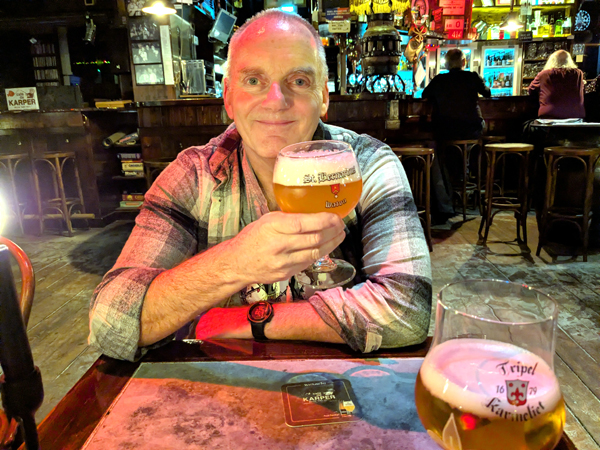
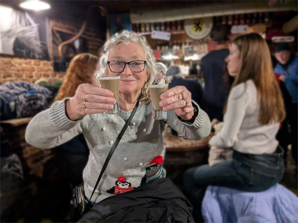
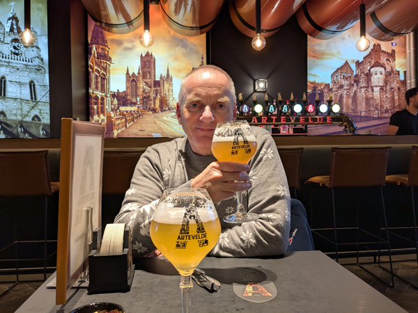
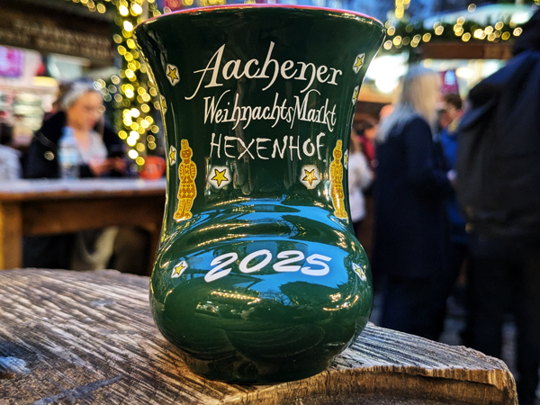
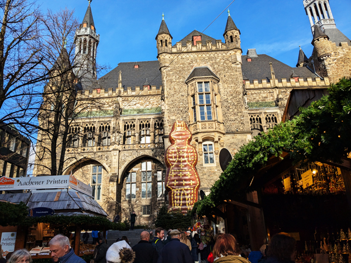
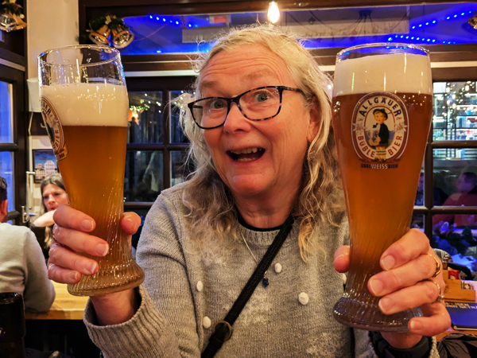
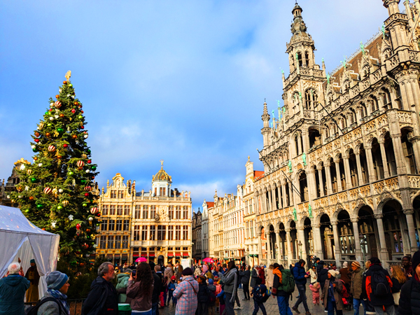

Monday 1st December We left Kingsclere on the 8:55 bus and got a train from Basingstoke just after 9:30. We had planned to walk across London but the weather was not great so we got the tube to St Pancras instead. We bought drinks for the journey and went to the Eurostar check-in. This was all reasonably smooth and by about 11:45, we were in the departure area.
We boarded the Eurostar at 12:40 and it left on time just after 13:00. We had our lunch when we got on and started on our beers about 30 minutes later. It was an enjoyable journey and we arrived on time in Brussels at 16:06.
The trains out of Brussels were all over the place. Everything seemed to be running late and we had four or five platform changes in 15 minutes before getting on a train that eventually left just after 16:30. All a bit messy but by 17:05, we had arrived in Ghent.

We decided to walk to the hotel instead of getting the tram. We are staying at the Ibis Opera which is only 1.8km from the station. We stopped for our first Belgian beer of the trip at Café De Karper which was exactly half way. This was a lovely bar that we had not been to before
We continued the walk to the Ibis, checked in and dropped our bags in the room. We went out again almost straight away after stopping for our welcome drink in the bar. We did not make it to that many bars this evening. We walked out to Trappistenhuis as we did not get there on our last visit to Ghent and we did not think we were likely to go there tomorrow as we were thinking about a day trip to Bruges. This was superb as always. We had a couple of drinks each as well as a sharing cheese platter. While in there we decided we would probably not bother with Bruges tomorrow.
After leaving there, we walked into the centre. We headed to the Artevelde Brewery, a new place since we were last here. However, this was closed despite Google saying that it should be open. 't Galgenhuis was aslo closed (closes at 6pm so we went straight to Het Waterhuis. In here I was able to have a St Bernadus Christmas beer. We had a couple in there before popping into 't Dreupelkot next door for a swift one.

By now, we were not too pissed but things were starting to go downhill a bit so we decided it was probably a good idea to start heading back to the hotel. We did not see anywhere else we wanted to stop off at on the way back so were back and in bed by 10:30.
Tuesday 2nd December We were up by about 9 and went out to the nearest Panos for breakfast. We then went for a walk round Ghent, past the Gravensteen and through the main squares. We went round a few of the places we want to visit tonight and then walked back to the hotel.
We had a couple of hours back in the room. Roz did go out to look round the shops but it was mainly relaxing before the start of the next session. I went out for a walk at 2:45 and met Roz at 3:30 at Artevelde Brewery where we had our first beers of the day. This place had quite good beers (all their own) and was nice enough although a bit modern for our tastes.

After a couple in there, we walked to 't Galgenhuis. We had not been able to get in here on our last visit to Ghent as there were too many of us but we were able to get a table inside this time and we stayed there for a few drinks. We had planned to go for a pizza at 6ish but a few glasses of Ghentse Triple knocked this idea on the head. We went instead to Dulle Griet and got through one of the 1.2 litre glasses of their own beer.
Things are starting to get a bit vague after this. We went to Trollekelder for another couple of beers and also had some cheese and pate to make up for not having pizzas. We had a final couple of drinks in Het Waterhuis before walking back to the hotel. We were back in the room before 10. A very enjoyable session.
Wednesday 3rd December We got up, had showers and checked out of the hotel by 10:15. We walked back to the station and for the second day running went to Panos for breakfast. Our train back to Brussels left on time at 11:24 and we were in Brussels by 11:52. We then had a wait of just over half an hour for the 12:25 ICE to Aachen. We did not have reservations on this train but the train was quite empty so we got seats with no problems. This train also left on time.
We got into Aachen about 20 minutes late just before 14:00 and had a short walk from the station to the Ibis. We checked in and put our bags in the room before going down for our welcome drink. We then headed into town. We had planned to stop for one in the Goldener Schwein but this seemed to be permanently closed. Poststübchen was not open until 17:00 so we went for one in Aachener Brauhaus before making our way up to the Christmas Market.

The market was very good again in a lovely location round the cathedral and town hall. We wandered round the lower part of it before stopping for a mulled wine/hot chocolate. The rest of the evening was spent wandering round our usual bars mixed with a few more visits to the market. We ate at Wirtshaus am Hühnerdieb and had a couple more drinks in both Postwagen Zum Ratskeller and Domkeller. At 9:15, Liverpool v Sunderland kicked off. We went back to Aachener Brauhaus and watched the first half on my phone. At half time we moved to Poststübchen for our final drinks of the day.
Thursday 4th December We left the hotel at about 10:30 and walked to BackWerk for breakfast. We then had a couple of hours walking round the Christmas market. It was a good time to visit as the weather was good and there were not too many people about. We bought a few souvenirs and presents and increased our collection of German houses. After a bit of dithering, we bought an "Aachener Brauhaus" and a "Zum goldenen Einhorn" and somehow managed to get a slightly damaged wine stube included in the deal.

We were back at the hotel by 1pm and walked to Yorma's at the station for lunch. Did not do much for the rest of the afternoon - we were both starting to feel the effects of the previous days drinking.

We went out to start again at about 4:30. We walked straight to Zum goldenen Einhorn as we had not visited there yesterday. It was very good in there as usual so we had a few drinks before moving on. We returned to Wirtshaus am Hühnerdieb to eat again and then went for another couple of rounds in the Domkeller. We had one drink in the Aachener Brauhaus and then headed for Poststübchen only to find it was closing early. We had already decided that we should have a slightly earlier night tonight so this was not the end of the world. We were back in the hotel by 9:30.
Friday 5th December We checked out of the hotel at 9:30 and walked back to the station. We had breakfast at Yorma's and then went up to the platform to wait for the 10:20 ICE back to Brussels. The train came in at about 10:15 and left on time. We arrived in Brussels at about 11:30. Our Eurostar was not until 15:51 so we had a few hours to kill.
We got off the train at Brussels Nord (it did not stop at Central) and walked into the centre. We went into the Grand Place which was as impressive as ever and the Manneken Pis which was as unimpressive as ever! We wandered round The Bourse and then into the main Christmas Market area at Sainte-Catherine. Once we had walked the full length of the market and back again, we started walking towards Brussels Midi.

We had not been sure about whether or not to drink today but once at the station, we found a bar that had a reasonable range of beers so we spent about an hour and a half in there. We bought more beer and food for the journey and then went and checked in. The train was coming from Amsterdam and was about 20 minutes late by the time it got to Brussels. It was an enjoyable journey with the bonus of meeting The Man in Seat 61.... who was in Seat 61.
We got into St Pancras at about 17:30 and got the tube back to Waterloo in time to watch the World Cup draw in the Wetherspoons. We got the train back to Basingstoke at about 7:30 and then a taxi back to Kingsclere. Got home at about 21:20.